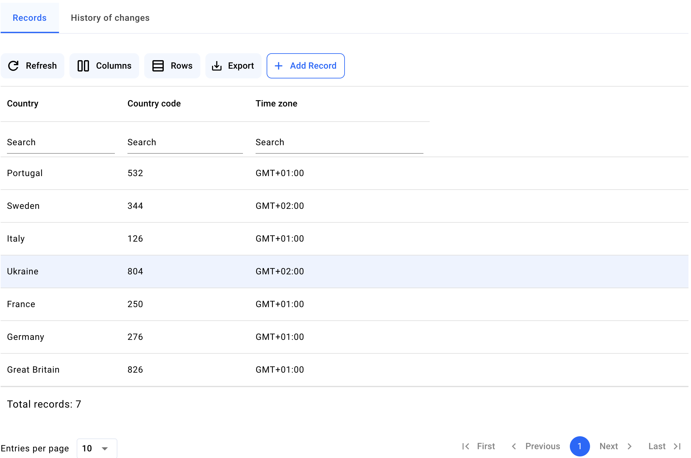
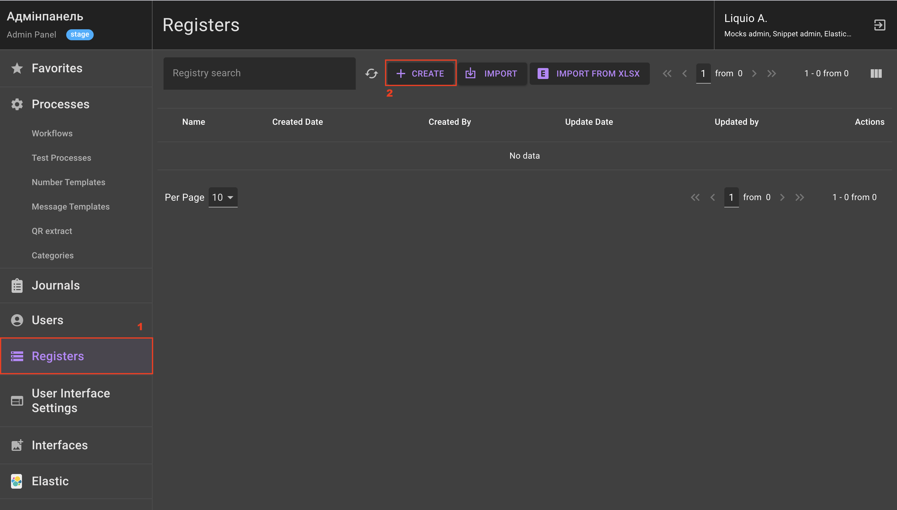
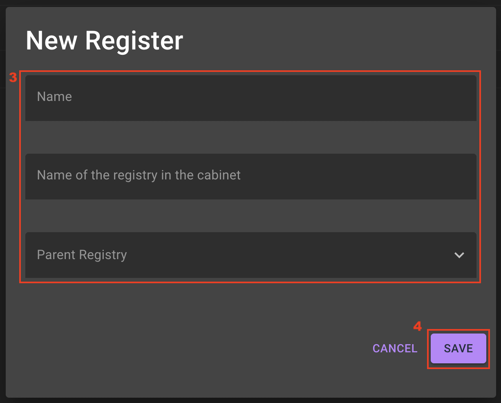
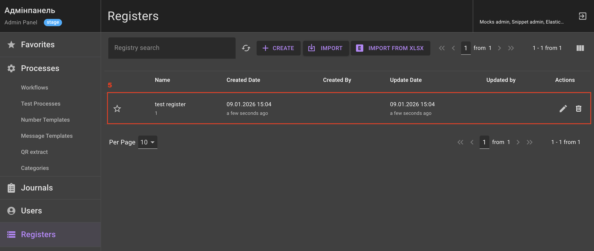
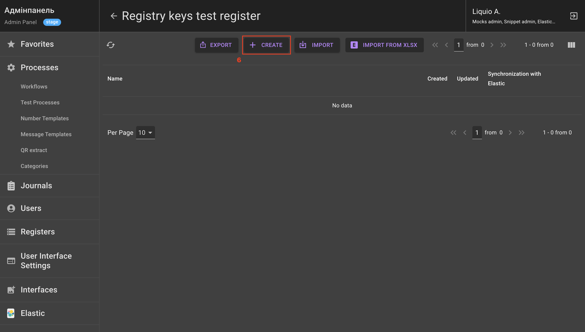
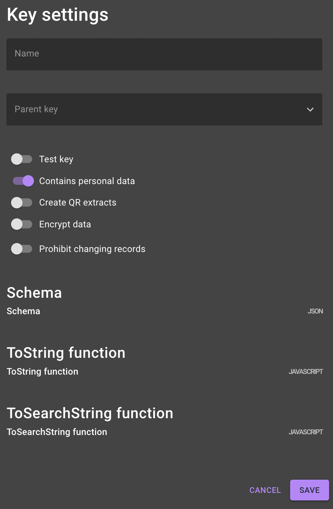

How to create a register?
About registers
What is a register?
Register is a storage for storing and processing process data: a small database integrated directly into the process logic.
What does a register look like?
In the Admin Panel the register looks like a "folder", which is an "empty" container. For the register to start working, register keys must be created in it — the actual tables where information is stored — and the structure of their fields must be described.
In the data structure the register is a relational system where document schemas are described instead of regular tables. Document schemas are register keys stored in JSON format.
In the User Workspace the register key is transformed from a JSON schema into a table with real records. Here, the user can see the result of business process execution — a list of applications with defined fields (status, record date, full name, etc.). Search, filtering, creation, editing, and deletion functions are available for each record.

A register key can also be a reference book with previously filled data. The reference book can be filled manually in the User Workspace or data can be automatically loaded by configuring it in the Admin Panel.
What is a register used for?
1) Storage: recording to the register key all data that the user enters during the process.
2) Automation: automatic updating or deleting of information according to the configured process logic.
3) Data linking: register keys can be linked to each other, allowing creating complex relationship systems for displaying data.
Creating a register
To create a new register, authorize in the Admin Panel and perform the following actions:
1) Go to the Registers section.
2) Click the Create button. 
3) In the pop-up window, fill in the fields Name, Name of the registry in the cabinet and Parent Registry (if necessary, to define hierarchical relationships between registers).
4) Click the Save button. 
5) Click on the newly created register in the list. 
6) In the opened window, register keys are stored. To create a key, click the Create button. 
7) In the pop-up window, fill in the fields:
Tip
The Name and Schema (JSON) fields are required. Other fields are filled in as necessary.
-
Name — the name of the register key;
-
Parent key — defines a hierarchical relationship between register keys;
-
Test key — defines the ability to manually filter keys in the list. There are no restrictions on using such a key, so the attribute is indicated if necessary;
-
Contains personal data — parameter for restricting access to the register key data. Enabled by default. If the toggle is enabled, access to the key will be determined:
- through the unit (see How to configure access rights?);
- through the process schema with specified personal filters;
Important
The Contains personal data and Use on input forms (strict access) toggles are incompatible: only one of them can be active at the same time.
-
Create QR extracts — parameter for attaching a QR extract template to the register. If the toggle is enabled, it is necessary to configure an update for this register key by adding
plinkto it; -
Encrypt data — parameter enables encryption for data stored in the database.
-
Prohibit changing records — parameter to prohibit updating data through process schema elements;
-
Schema (JSON) — JSON schema of the register key that describes its records.
The structure of the register key JSON schema consists of three required blocks and one optional block:
- Required blocks:
- type — the data type of the key, always equals
object. - properties — a list of JSON fields that should be stored in the key. Each field must have a defined
typeanddescription. - required — an array listing the register key’s required fields.
- type — the data type of the key, always equals
- Optional blocks:
- customTypes — custom validation functions for values. For example, it may be necessary to validate that the value is an email address and that its domain is not on the blocked list.
Example JSON schema code
- Required blocks:
-
ToString function (JAVASCRIPT) — the specified result of the function execution will display the record name in the lists of the specified process in the User Workspace. The function takes one argument —
record(the entire object from the key schema);
Example code
- ToSearchString function (JAVASCRIPT) — the specified result of the function execution is used as an index for search in a simplified format. Accepts up to 3 indexed values. The function takes one argument —
record(the entire object from the key schema).
Example code
8) Click the Save button after entering the data.

Result: a register has been created with a key containing a JSON schema that describes the records. Now the user can configure saving data to the register.